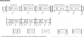
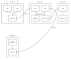

 A transaction is a transfer of Bitcoin value that is broadcast to the network and collected into blocks. A transaction typically references previous transaction outputs as new transaction inputs and dedicates all input Bitcoin values to new outputs. Transactions are not encrypted, so it is possible to browse and view every transaction ever collected into a block.
{kind=link}
Standard transaction outputs nominate addresses, and the redemption of any future inputs requires a relevant signature.
All transactions are visible in the block chain, and can be viewed with a hex editor. A block chain browser is a site where every transaction included within the block chain can be viewed in human-readable terms. This is useful for seeing the technical details of transactions in action and for verifying payments.
general format of a Bitcoin transaction (inside a block)
| Field | Description | Size |
|---|---|---|
| Version no | 1 for normal, 2 for OP CHECKSEQUENCEVERIFY | 4 bytes |
| In-counter | positive integer VI = VarInt | 1 - 9 bytes |
| list of inputs | the first input of the first transaction is also called "coinbase" (its content was ignored in earlier versions) | <in-counter>-many inputs |
| Out-counter | positive integer VI = VarInt | 1 - 9 bytes |
| list of outputs | the outputs of the first transaction spend the mined bitcoins for the block | <out-counter>-many outputs |
| lock_time | if non-zero and sequence numbers are < 0xFFFFFFFF: block height or timestamp when transaction is final | 4 bytes |
Principle example of a Bitcoin transaction with 1 input and 1 output only
Data
Input: Previous tx: f5d8ee39a430901c91a5917b9f2dc19d6d1a0e9cea205b009ca73dd04470b9a6 Index: 0 scriptSig: 304502206e21798a42fae0e854281abd38bacd1aeed3ee3738d9e1446618c4571d10 90db022100e2ac980643b0b82c0e88ffdfec6b64e3e6ba35e7ba5fdd7d5d6cc8d25c6b241501 Output: Value: 5000000000 scriptPubKey: OP_DUP OP_HASH160 404371705fa9bd789a2fcd52d2c580b65d35549d OP_EQUALVERIFY OP_CHECKSIG
Explanation
The input in this transaction imports 50 BTC from output #0 in transaction f5d8... Then the output sends 50 BTC to a Bitcoin address (expressed here in hexadecimal 4043... instead of the normal base58). When the recipient wants to spend this money, he will reference output #0 of this transaction in an input of his own transaction.
Input
An input is a reference to an output from a previous transaction. Multiple inputs are often listed in a transaction. All of the new transaction's input values (that is, the total coin value of the previous outputs referenced by the new transaction's inputs) are added up, and the total (less any transaction fee) is completely used by the outputs of the new transaction. Previous tx is a hash of a previous transaction. Index is the specific output in the referenced transaction. ScriptSig is the first half of a script (discussed in more detail later).
The script contains two components, a signature and a public key. The public key must match the hash given in the script of the redeemed output. The public key is used to verify the redeemers signature, which is the second component. More precisely, the second component is an ECDSA signature over a hash of a simplified version of the transaction. It, combined with the public key, proves the transaction was created by the real owner of the address in question. Various flags define how the transaction is simplified and can be used to create different types of payment.
Output
An output contains instructions for sending bitcoins. Value is the number of Satoshi (1 BTC = 100,000,000 Satoshi) that this output will be worth when claimed. ScriptPubKey is the second half of a script (discussed later). There can be more than one output, and they share the combined value of the inputs. Because each output from one transaction can only ever be referenced once by an input of a subsequent transaction, the entire combined input value needs to be sent in an output if you don't want to lose it. If the input is worth 50 BTC but you only want to send 25 BTC, Bitcoin will create two outputs worth 25 BTC: one to the destination, and one back to you (known as "change", though you send it to yourself). Any input bitcoins not redeemed in an output is considered a transaction fee; whoever generates the block will get it. 
{kind=link}
Verification
To verify that inputs are authorized to collect the values of referenced outputs, Bitcoin uses a custom Forth-like scripting system. The input's scriptSig and the referenced output's scriptPubKey are evaluated (in that order), with scriptPubKey using the values left on the stack by scriptSig. The input is authorized if scriptPubKey returns true. Through the scripting system, the sender can create very complex conditions that people have to meet in order to claim the output's value. For example, it's possible to create an output that can be claimed by anyone without any authorization. It's also possible to require that an input be signed by ten different keys, or be redeemable with a password instead of a key.
Types of Transaction
Bitcoin currently creates two different scriptSig/scriptPubKey pairs. These are described below.
It is possible to design more complex types of transactions, and link them together into cryptographically enforced agreements. These are known as Contracts.
Pay-to-PubkeyHash
scriptPubKey: OP_DUP OP_HASH160 <pubKeyHash> OP_EQUALVERIFY OP_CHECKSIG
scriptSig: <sig> <pubKey>
A Bitcoin address is only a hash, so the sender can't provide a full public key in scriptPubKey. When redeeming coins that have been sent to a Bitcoin address, the recipient provides both the signature and the public key. The script verifies that the provided public key does hash to the hash in scriptPubKey, and then it also checks the signature against the public key.
Checking process:
| Stack | Script | Description |
|---|---|---|
| Empty. | OP_DUP OP_HASH160 OP_EQUALVERIFY OP_CHECKSIG | scriptSig and scriptPubKey are combined. |
| OP_DUP OP_HASH160 OP_EQUALVERIFY OP_CHECKSIG | Constants are added to the stack. | |
| OP_HASH160 OP_EQUALVERIFY OP_CHECKSIG | Top stack item is duplicated. | |
| OP_EQUALVERIFY OP_CHECKSIG | Top stack item is hashed. | |
| OP_EQUALVERIFY OP_CHECKSIG | Constant added. | |
| OP_CHECKSIG | Equality is checked between the top two stack items. | |
| true | Empty. | Signature is checked for top two stack items. |
Pay-to-Script-Hash
scriptPubKey: OP_HASH160 <scriptHash> OP_EQUAL
scriptSig: ..signatures... <serialized script>
m-of-n multi-signature transaction:
scriptSig: 0 <sig1> ... <script>
script: OP_m <pubKey1> ... OP_n OP_CHECKMULTISIG
P2SH addresses were created with the motivation of moving "the responsibility for supplying the conditions to redeem a transaction from the sender of the funds to the redeemer. They allow the sender to fund an arbitrary transaction, no matter how complicated, using a 20-byte hash"1. Pay-to-Pubkey-hash addresses are similarly a 20-byte hash of the public key.
Pay-to-script-hash provides a means for complicated transactions, unlike the Pay-to-pubkey-hash, which has a specific definition for scriptPubKey, and scriptSig. The specification places no limitations on the script, and hence absolutely any contract can be funded using these addresses.
The scriptPubKey in the funding transaction is script which ensures that the script supplied in the redeeming transaction hashes to the script used to create the address.
In the scriptSig above, 'signatures' refers to any script which is sufficient to satisfy the following serialized script.
Checking process:
| Stack | Script | Description |
|---|---|---|
| Empty. | 0 OP_2 OP_3 OP_CHECKMULTISIG | Only the scriptSig is used. |
| 0 OP_2 OP_3 | OP_CHECKMULTISIG | Constants are added to the stack. |
| true | Empty | Signatures validated in the order of the keys in the script. |
See also BIP 0016
Generation
Generations have a single input, and this input has a "coinbase" parameter instead of a scriptSig. The data in "coinbase" can be anything; it isn't used. Bitcoin puts the current compact-format target and the arbitrary-precision "extraNonce" number there, which increments every time the Nonce field in the block header overflows. Outputs can be anything, but Bitcoin creates one exactly like an IP address transaction. The extranonce contributes to enlarge the domain for the proof of work function. Miners can easily modify nonce (4byte), timestamp and extranonce (2 to 100bytes).
general format (inside a block) of each input of a transaction - Txin
| Field | Description | Size |
|---|---|---|
| Previous Transaction hash | doubled SHA256-hashedof a (previous) to-be-used transaction | 32 bytes |
| Previous Txout-index | non negative integer indexing an output of the to-be-used transaction | 4 bytes |
| Txin-script length | non negative integer VI = VarInt | 1 - 9 bytes |
| Txin-script / scriptSig | Script | <in-script length>-many bytes |
| sequence_no | normally 0xFFFFFFFF; irrelevant unless transaction's lock_time is > 0 | 4 bytes |
The input sufficiently describes where and how to get the bitcoin amout to be redeemed. If it is the (only) input of the first transaction of a block, it is called the generation transaction input and its content completely ignored. (Historically the Previous Transaction hash is 0 and the Previous Txout-index is -1.)
general format (inside a block) of each output of a transaction - Txout
| Field | Description | Size |
|---|---|---|
| value | non negative integer giving the number of Satoshis(BTC/108)to be transfered | 8 bytes |
| Txout-script length | non negative integer | 1 - 9 bytes VI = VarInt |
| Txout-script / scriptPubKey | Script | <out-script length>-many bytes |
The output sets the conditions to release this bitcoin amount later. The sum of the output values of the first transaction is the value of the mined bitcoins for the block plus possible transactions fees of the other transactions in the block.